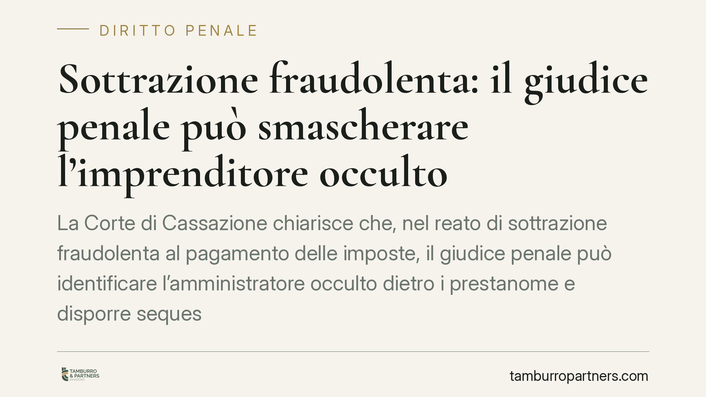

Sottrazione fraudolenta: il giudice penale può smascherare l'imprenditore occulto
La Corte di Cassazione chiarisce che, nel reato di sottrazione fraudolenta al pagamento delle imposte, il giudice penale può identificare l'amministratore occulto dietro i prestanome e disporre sequestri anche senza un previo accertamento formale dell'Agenzia delle Entrate. Un principio che colpisce direttamente lo schema evasivo delle società 'apri e chiudi' e ridisegna i confini della responsabilità penale tributaria.

Il caso e il principio
La Cassazione è tornata sul reato di sottrazione fraudolenta al pagamento delle imposte, previsto dall'articolo 11 del D.lgs. 74/2000. La questione centrale: può il giudice penale individuare l'amministratore di fatto — l'imprenditore occulto che agisce dietro un prestanome — e colpirlo con un sequestro, senza attendere un accertamento tributario definitivo?
La risposta è affermativa. Non serve una cosiddetta "pregiudiziale tributaria", cioè un previo e formale accertamento del Fisco sull'esistenza e sull'ammontare del debito. Il giudice penale può valutare autonomamente lo schema fraudolento e risalire a chi lo ha realmente diretto.
Inquadramento normativo
L'articolo 11 del D.lgs. 74/2000 punisce chi, per sottrarsi al pagamento di imposte, interessi o sanzioni superiori a cinquantamila euro, compie atti fraudolenti sui propri beni — o su beni altrui — idonei a rendere inefficace la riscossione coattiva. È un reato di pericolo: non richiede che la riscossione sia effettivamente fallita, ma che gli atti siano idonei a ostacolarla.
La pronuncia si inserisce in un orientamento consolidato: il processo penale tributario gode di autonomia rispetto al procedimento amministrativo di accertamento. Il giudice penale non è vincolato alle valutazioni dell'Agenzia delle Entrate e può accertare in via incidentale sia l'esistenza del debito sia l'identità del reale gestore dell'attività.
Il punto qualificante riguarda la figura dell'amministratore di fatto. Chi gestisce realmente l'impresa risponde del reato anche se formalmente non ricopre alcuna carica, perché quella carica è intestata a un prestanome. La responsabilità penale segue la sostanza, non l'etichetta.
Implicazioni pratiche
La decisione incide su un modello operativo diffuso: le società "apri e chiudi". Si costituisce una società, la si fa gestire da un prestanome, si accumulano debiti erariali e poi la si svuota o la si abbandona, spostando l'attività su un nuovo veicolo pulito. Il prestanome resta sulla carta; chi comanda resta nell'ombra.
Questo schema diventa molto più fragile. Il giudice penale può oggi:
- risalire all'imprenditore occulto sulla base di indici fattuali (chi tratta con banche, fornitori, dipendenti, chi dispone della cassa);
- disporre il sequestro preventivo, anche per equivalente, sui beni del reale gestore;
- procedere senza attendere i tempi dell'accertamento tributario, spesso più lenti.
Attenzione anche alla posizione del prestanome. L'intestatario formale non è automaticamente estraneo: può rispondere a titolo di concorso se consapevole dello schema, o comunque subire conseguenze patrimoniali e reputazionali rilevanti.
Rilievo specifico ha poi la figura del terzo interessato: chi acquista o riceve beni poi ritenuti oggetto di atti fraudolenti può vedersi coinvolto nel sequestro e deve essere in grado di dimostrare la genuinità e l'effettività dell'operazione.
Cosa fare in concreto
- Verificate la coerenza tra ruolo formale e gestione reale. Se chi firma non è chi decide, il rischio penale si concentra su quest'ultimo: documentate chi assume effettivamente le scelte dell'impresa.
- Non accettate incarichi fittizi di amministratore. La carica di prestanome non protegge: espone a responsabilità penale e patrimoniale.
- Conservate tracciabilità delle operazioni sui beni aziendali e personali. Cessioni, conferimenti e trasferimenti vanno giustificati da ragioni economiche reali e documentabili.
- Monitorate l'esposizione debitoria verso l'Erario. Superata la soglia rilevante, ogni atto di disposizione sui beni va valutato con attenzione per il profilo penale.
- In presenza di indagini o sequestri, attivatevi subito. La contestazione all'identificazione dell'amministratore di fatto e la dimostrazione della buona fede del terzo richiedono una difesa tempestiva e documentale.
La pronuncia conferma una tendenza netta: il diritto penale tributario guarda alla realtà economica più che alle intestazioni formali. Le strutture costruite per creare distanza tra chi gestisce e chi appare offrono una protezione sempre più illusoria.
---
*Contributo informativo a cura di Tamburro & Partners - Avv. Giuseppe Tamburro. Non costituisce parere legale.*
Ogni condominio ha una storia a sé.
Se gestisci un'amministrazione e vuoi un confronto su una specifica questione condominiale, scrivi allo studio. Ti rispondiamo entro un giorno lavorativo.